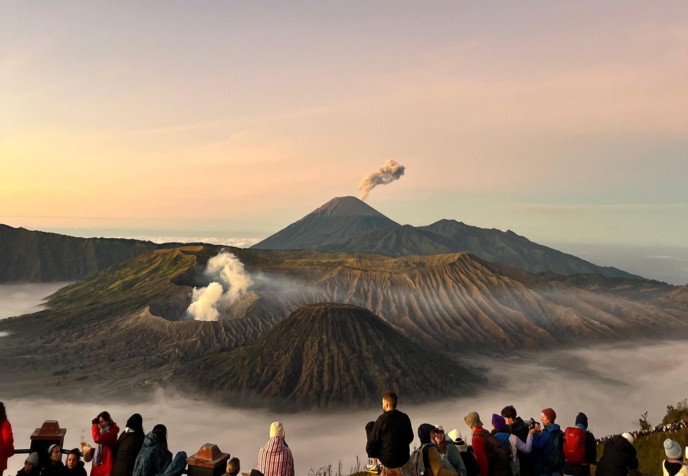
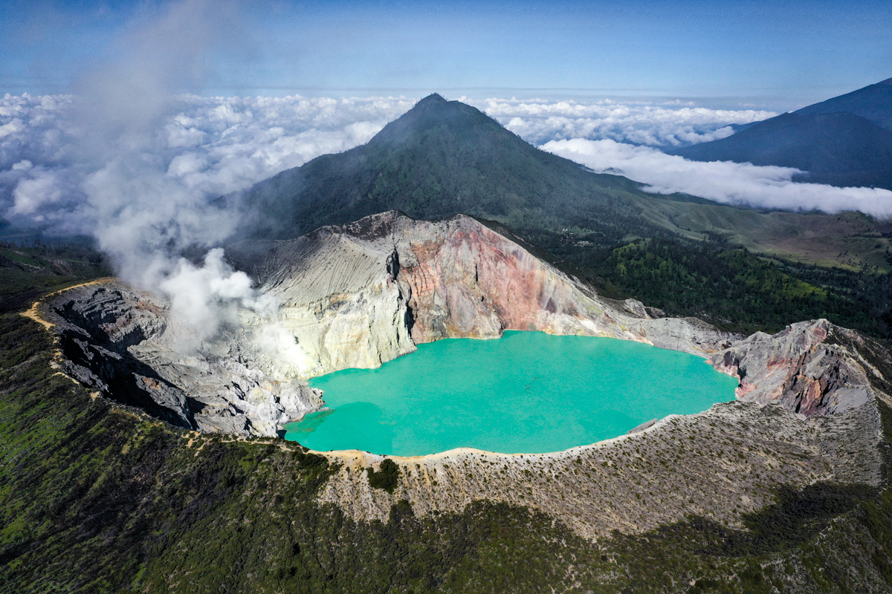

🏡 Beranda
Selamat datang di website Jelajah Wisata Indonesia. Website ini berisi informasi mengenai beberapa tempat wisata menarik yang ada di Indonesia.
Indonesia memiliki banyak sekali destinasi wisata mulai dari pegunungan, pantai, laut, hingga wisata budaya.
🗺️ Destinasi Wisata
Berikut adalah objek wisata menarik di Jawa Timur.

Gunung Bromo
Gunung Bromo merupakan salah satu tempat wisata terkenal yang berada di Jawa Timur.

Kawah Ijen
Kawah Ijen merupakan salah satu tempat wisata terkenal yang berada di Jawa Timur.

Air Terjun Coban Rondo
Air Terjun Coban Rondo merupakan salah satu tempat wisata terkenal yang berada di Jawa Timur.
🎶 Musik Nusantara
Silakan dengarkan musik berikut sambil menikmati informasi wisata Indonesia.
🌿Wonderland Indonesia
Silakan melihat video berikut sambil menikmati informasi wisata Indonesia.